Himari Meimei VS Succubus 旧ゲーム開発ログになります。
新しいゲーム開発ログはItch.ioに記録してますので、そちらをご覧くださいませ。 〇またお会いしましょうボイスの作り直し 〇こんにちは私はめいめいひまりですに作り直し 〇JSONにトライ処理を追加する 〇アニメーションの修正。太ももの方向を調整 〇翻訳全般（ボイスを下部に実装） 〇翻訳を下部に実装 〇スマホ翻訳を別に実装 〇トップ画面にも翻訳を追加する（これでゲームは終了です。お疲れ様でした） 〇スキル効果バフにより、レベルデザイン調整 〇字幕のフォントサイズ調整 〇エンディング前に字幕入れるため、エンディングに入る時間を遅らせる 〇アイテムショップ中に字幕が出ない不具合 〇エンディング後にGOTOPを押すと、ボイスが2個鳴る不具合 〇サウンドからの処理をループからにする。サウンドの不具合を解決 〇QWER使用中の際にスキルレベルのフォントの不具合を解決 〇エンディングに入る前にボイスが止まる不具合（timerの問題） 2026/09/14 〇トップ画面のランキングを翻訳 〇トップ画面上の言語別フォントサイズ調整 〇QWER下部フォントサイズを調整 〇トップ画面を右から表示する言語に対応 〇リザルト画面にて右から表示する言語に対応 〇エンディング翻訳 〇UI翻訳 〇アイテムショップを翻訳 〇アイテムショップ内での右から読む言語の不具合を解消 〇ステージナンバーとポーズのフォント言語別調整 2026/09/13 〇ボイス翻訳 〇ボイスを一度英訳 〇エンディングを一度英訳 〇リザルトを翻訳（Ranked Numberだけ） 〇エンディングで言語を取得しない不具合を修正 〇コンフィグのフォント言語別調整 2026/09/12 〇タッチジェスチャーになる問題を解決。F12の開発者ツール由来でした 〇タッチパネルつきノートの切り替えの不具合を解消 〇メイン画面のボイスをスムースに調整。呼吸と、短く 〇ボイス制作（スムースにつながる用に調整） 〇ボイスの整理 〇ゲーム開始時にサウンドの多用で、ゲームパッドで敵の弾が早くなる不具合を解消 2026/09/11 〇フランス語の初期設定をJSOＮある場合はそれを使うよう仕様変更 2026/09/10 〇JSONの追加実装（ Config Data, Language, Result Ranking, Clearedf ) 〇French Keyboardにて、キー入力とマウスとの干渉を解決 〇France語で、マウスクリック押せない、色が変わらない等の不具合を解決 〇コンフィグ画面で、MouseDragが選択できない不具合を解消 2026/09/09 〇入力方法を変更すると、設定が初期化される事案を解消 〇リザルトでキー入力で移動できない。マウスとの干渉を解決 〇WASDにて死んだ後に右側に急ぐ不具合を解消 〇タイマーが進んでいて、最初にボスが出てくる不具合を解決 〇銃が押しっぱなしになる不具合。呼び出し順を入れ替えて解決 〇低画質の背景が変わらない不具合。JSONの呼び出し方を変更して解決 〇コンフィグ操作の一部が描画されない不具合。JSONの呼び出し方を変更して解決 〇トップ画面のボタンが連打される事案を解消 〇リザルト画面とトップ画面とアイテムショップ内で、 マウスとの干渉でWASDやゲームパッドで動かせない不具合を解決 〇スペシャルサンクスの修正。スペシャルサンクスもゲームパッドで動きます 〇コンフィグにJSON11個使ってるのを2個に減らしたい。２個にはなりませんでした。 〇エンディングにトランスレーションの追加 〇金メダルのトリコロールの色の順番を修正 〇ゲームパッドでサブマシンガンの音が鳴らない不具合を修正 〇リザルト画面にて範囲外をクリックする不具合を修正 〇トップ画面にて、十字キーを使う人にとって、Zボタンでゲームを始めれない不具合を修正 〇エンディング画像をたくさん描画する不具合を修正 〇フランス語はJSONでセーブしても再ロードされる問題を解決 〇ボスのスキル変更ができない 〇鬼モンスターの調整 〇アイテムショップに入るとタイマーが０になる事案を修正 〇敵が出なくなるバグ。多分直ってるかも 〇アイテムショップで、お金が不足しても購入できる事案が発生 〇死んだ後に発射しない銃の音が鳴り続ける事案を解消 〇ボスを倒した後、コンフィグに入るとBGMがボスに戻るという事案を解消 〇ロボのビームバグを調整 〇急に長いまま発射される 〇途中で止まる 〇なぜかビームを発射したまま上下に動く 〇途中で止まる。そして連射する 〇発射しなくなる 〇アサルトライフルに切り替わらない 〇キャラの当たり判定の作り直し 〇AA 〇Q 〇W 〇E 〇R 〇エンディングの実装 〇デバッグモードの追加 〇無限バリア（シューティングのレベルデザインに疲れてしまったため） 〇全スキル＋１（シューティングのレベルデザインに疲れてしまったため） 〇低スペックモードの実装 〇モブ１ 〇モブ２ 〇モブ３ 〇モブ４ 〇モブ５ 〇モブ６ 〇モブ７ 〇モブ８ 〇モブ９ 〇モブ１０ 〇衝突判定 〇キャラクターアニメーションの作り直し 〇服のふち 〇腕のふち 〇手のふち 〇スカートのふち 〇スカート裏のふち 〇タイツのふち 〇足靴のふち 〇髪の塗り 〇服の塗り 〇腕の塗り 〇手の塗り 〇スカートの塗り 〇スカート裏の塗り 〇タイツの塗り 〇足靴の塗り 〇左手ふち 〇左手塗り 〇首元塗り 〇スカート横リボンふち 〇スカート横リボン塗り 〇新アニメ化 〇爽快感と頭痛にならないレベルデザイン 2026/08/28 唇が灰色なんですが…なぜ！ これを修正する場合は画像編集ソフトで１枚１枚コピペして結合して私の指が痙攣しますね いい感じに進んでるのは間違いありません あと、１週間前後でゲームは完成予定 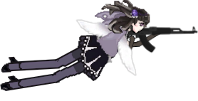 キャラクターアニメーションの作り直し JSONの追加実装（ Config Data, Language, Result Ranking ) エンディング 翻訳全般（英語になってる部分とボイスを下部に実装） 画質と低スペックモードの実装 爽快感といい感じのフラストレーションなレベルデザイン finally! 2026/08/23 〇France Keyboard 配列対応（これは一旦止める判断してましたが、再度入れ直すことにしました） 〇Smart Phone 入力 〇プレレンダリング 〇処理 〇描画 〇Game Pad 入力 〇GUIの入力 〇アイテムショップをAny Deviceで入力する 〇リザルトのマウスの入力画面 〇サブ制作 〇アイテムショップを開きやすく 〇アイテムショップBUYの範囲を大きくする 〇アイテムショップの出口を大きくする 〇キーボードでポーズ ミュート コンフィグ処理を可能にする 〇画質クオリティーの設定 〇ボスの移動ルーチン 〇QWERの名前変わっても描画する 〇QWERの入力設定を変えても入力可能にする 〇一部のモンスターの連射を遅くしました。 〇爽快感とちょうどいいストレスと頭痛にならないレベル調整 バグ対応 〇ミュートオンにしてコンフィグに入って戻ったら音が鳴るバグ修正 〇ポーズしてQを使って戻った後に、ポーズができなくなる事象が発生 〇ポーズボタン押して長時間経って戻ると処理が重くなっている事象が発生 〇警備ロボの判定を再修正 〇十字キー入力 スキルボタンを表示されない 〇死ぬとアサルトの音になる 〇バリアーが外れないバグが発生 バリア時間2秒～2.8秒 〇アイテムショップのヒット判定の下部がクリックできない事象が発生 〇ゲーム画面に入ってすぐにポーズを押される事象が発生 〇ポーズ中に動けてしまう不具合が発生 〇WASDと十字キーで弾が連射になる 〇スキルを打って死ぬと、スキルが止まってリスタート後に発射される 〇長時間ポーズ中後に１面のボスが出てきてしまった。ポーズ後に処理が重くなる事象が発生 〇ポーズで雲が止まってない事象が発生 〇トップ画面にきらきら星を入れる。（入れてみましたが、目がチカチカするので取り消しました。） 〇ポーズボタンをキャンセルキー（Esc, Skill1, Del, Back Space）で解除できるようにしました。 2026/08/18 制作中 ボスの移動ルーチン Game Pad 入力 Smart Phone 入力 キャラクターアニメーションの作り直し France Keyboard 配列対応（これは一旦止める判断してましたが、再度入れ直すことにしました） JSONの追加実装（ Config Data, Language, Result Ranking ) エンディング 翻訳全般（英語になってる部分とボイスを下部に実装） 画質と低スペックモードの実装 爽快感といい感じのフラストレーションなレベルデザイン finally! 2026/08/16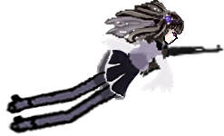 〇BGM編集 及び切り替え実装 〇BGMの読み込み 〇BGMからちょうちょ 〇ちょうちょからBGM 〇BGMからボス 〇ボスからBGM 〇アイテムショップの出る時間 〇３０秒 〇９０秒 〇死んだ分だけ短くなる 〇ちょうちょで自動コイン集め 〇ちょうちょ画像編集 〇ちょうちょ画像取込 〇ちょうちょプレレンダリング 〇ちょうちょ処理 〇ちょうちょ描画 〇ちょうちょの出る時間 〇４５秒 〇敵を倒すごとにCD短くなる 〇５秒に１回CD半減 〇１０秒に１回２体湧き 〇Mob吹き出し移植 〇プレレンダリング 〇処理 〇描画１ 〇描画２ 〇ショップのキャンセリングバグ。キャンセルボタンを使う 〇続けてくれてありがとうのボイス追加 〇ボスを倒した後の処理 〇アイテムショップのバグ修正 〇敵のゴールドドロップ実装 〇敵のHP実装 〇敵のルーチンタイプ 2026/08/10 アニメーションを実装しようとしましたが、その前にデモを上げたいです。巻き髪も同時制作中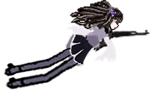 〇Qスキルのタイミング調整 〇味方スキル移植 〇プレレンデリング 〇リアルタイム 〇移植 〇当たり 〇Q 〇W 〇E 〇R 〇Dead Anime 〇キャラクター死亡演出遅延 〇黒弾幕のリスタート 〇バイブレーションボタン入力変更 〇バイブレーション試験 〇Config 〇バイブオンオフ 〇リザルト画面の追加 〇Score表示 獲得賞金額 〇モブ攻撃実装 〇プレレンデリング 〇リアルタイム 〇描画 〇ボスアニメーション 〇当たり 〇BOSS1の仕様変更する 〇リザルト画面の追加 獲得賞金額 倒したモンスターの数 与ダメージ 〇アイテムショップ実装 2026/08/03 死亡演出方法を変えてみました。いい感じです 現在制作中：リザルト画面の追加 獲得賞金額 倒したモンスターの数 与ダメージ 2026/07/28 2026/07/27 やや作る量を増やしすぎてる感が否めませんが、まあいいでしょう 〇Dead Animation キャラクター死亡遅延演出 〇黒弾幕のリスタート 〇Config バイブオンオフ バイブレーション試験 2026/07/25 リザルト画面の追加 獲得賞金額 倒したモンスターの数 与ダメージ ちょうちょでコイン集め ドローンショップを移行 味方スキルを移行 敵の攻撃を移行 Mob吹き出しを移行 ここでデモを公開できると思います 2026/07/24 敵の攻撃パターン無事終了しました。 2026/07/18 新キャラを試行錯誤中。立ち絵に合わせて、キャラクターをアップデート中。 ちょっと頭のてっぺん大きいかな。あと目が小さい。顔のＥラインが甘い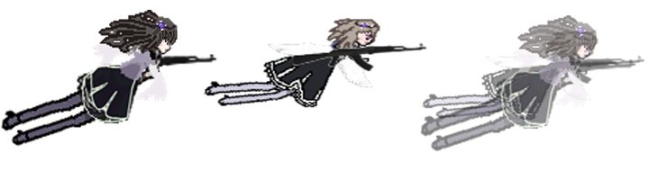 敵の攻撃パターンを現在作ってます。画像はのせるほどでもありませんが、とりあえず４体できました 敵は１１体出る予定なのであと７体です 2026/07/13 敵の攻撃パターン ルーチンをプログラミングしてます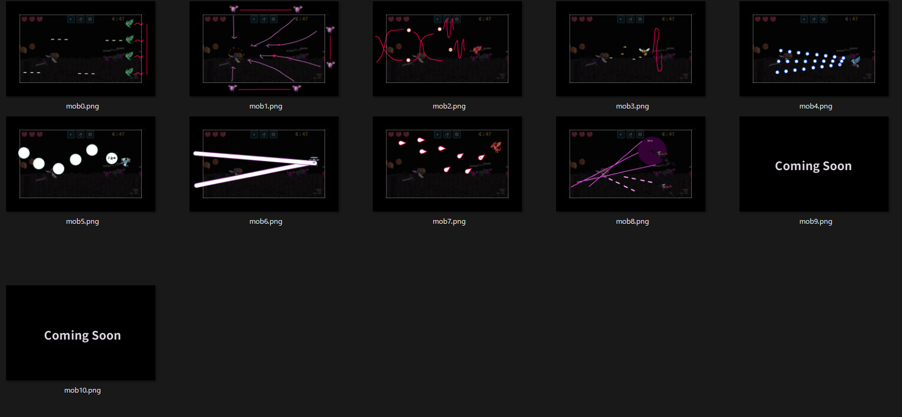 2026/07/09 調子を崩してましたが、やや回復したので制作を再開 オンライン実習室というYOUTUBEのライブはとても興味深い。 周りの人たちが勉強、在宅、家事、創作と作業して共感できる 余談をしましたが、スキルのエフェクトはできました。 まずはグレネード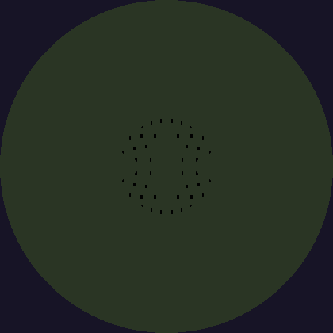 ウルトです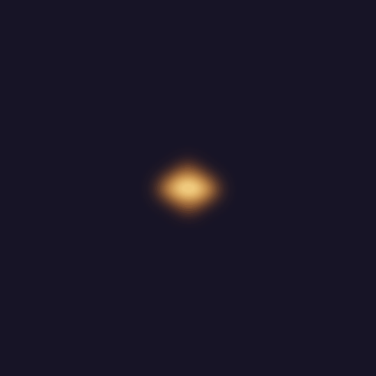 死亡エフェクトです Configは一応完成。ただ処理が重いことがちょっと心配。スマホは動くのかな Config ・Touch Gestures入力 ・バイブレーション試験 2026/06/24 けっこう進んだぞ！Game Pad終了したのやばい！嬉しい！ カスタマイズの表示方法変更処理 終了 フランス語キーボード配列AZERTY対応 処理不足のため断念 QWER入力 終了 十字キー入力 終了 Game Pad 終了 言語をゲームパッド、キーボードで変更する 終了 2026/06/27 コンフィグ内容の入力はできたので、処理と描画する 設定画面入ると画面が最大化しちゃうんだ！ 翻訳の追加。トップ画面とボイス内容２６ワード＊３３言語 簡易入力設定の入れ替え 2026/06/20 スマホゲーやんないからわかんないけど、こんな感じの入力で合ってるかな？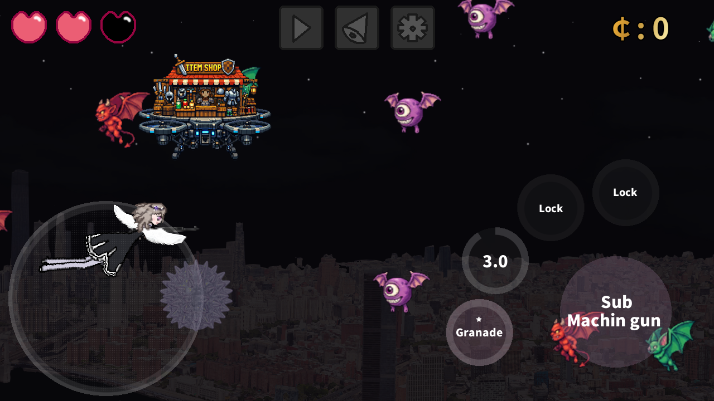 お買い物はいつだって楽しい。ここの店員元はおじさんだったんだ 翻訳をがんばりました。ただ、文字がはみ出てるのと、 GUIをきれいに行を揃えたいなと思います。明日はもっと進むといいな。 2026/06/19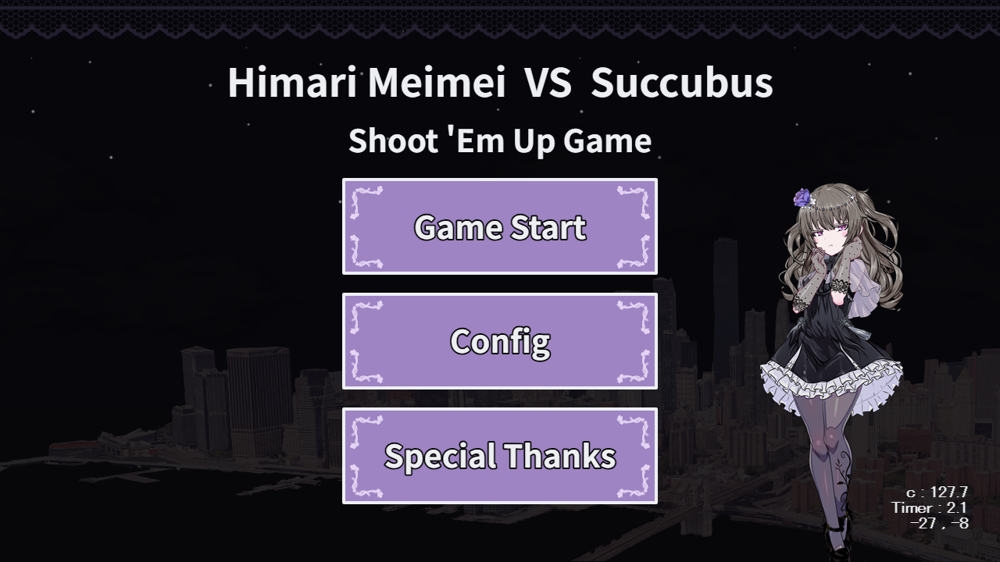 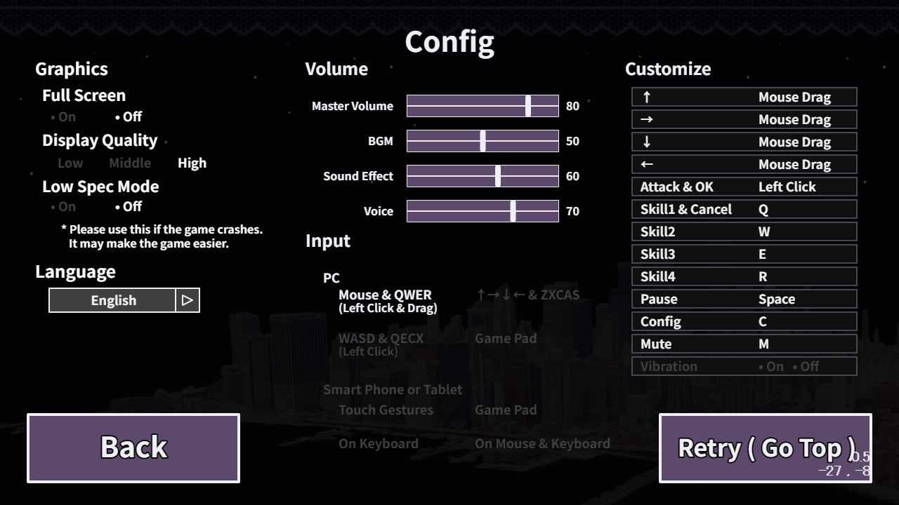 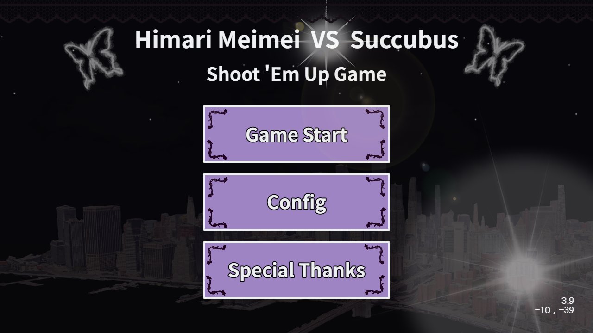 Monster から Charaへの攻撃 Score表示 獲得賞金額 ここでデモ版公開できるかと思います。 エンドロール作成 Mob吹き出しの微調整 アニメーション追加 真上移動 真下移動 斜め上移動 斜め下移動 死亡時のAnimationを追加します。 何もしてない時の状態のアニメーションを追加します。 トップ画面の飾りつけ 2026/07/19 終了タスク 翻訳作業をスクリプトに埋め込み完了 吹き出しに台詞を埋め込みましたが、左右の幅がうまくいきませんでした。 33言語と、言語によって文字の横幅に差分あり、処理できませんでした。 33言語の処理は困難とし、ChatGPTの提案で吹き出しは固定のまま進めることにしました。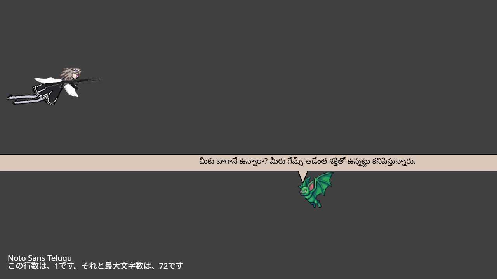 2026/06/09 |